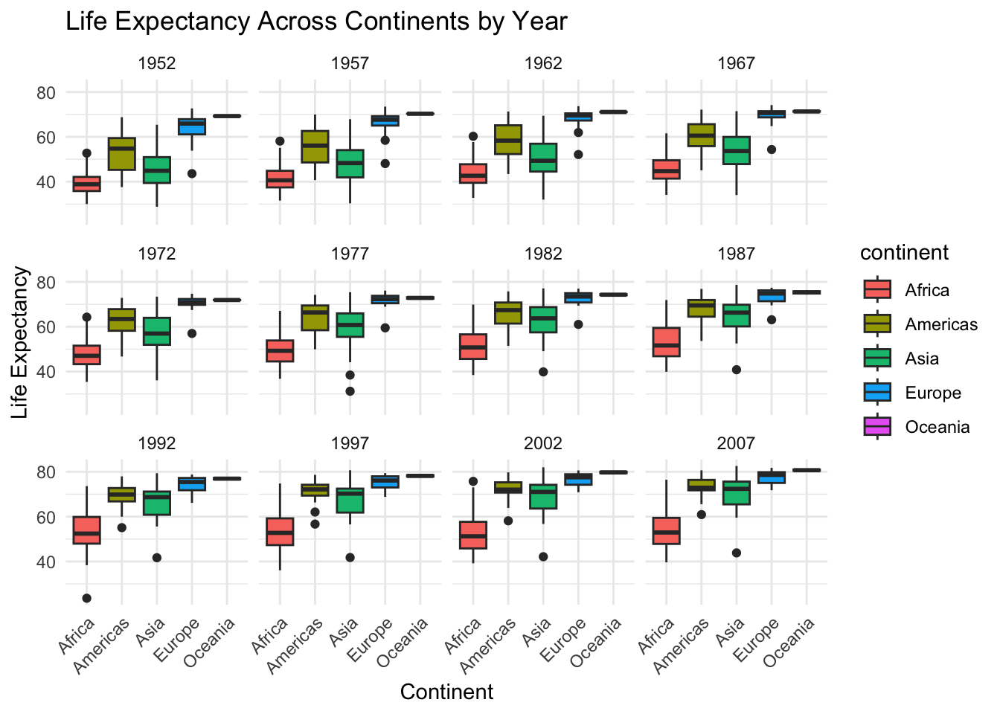

In this first practical, we will be using R. This is just a training to improve our plotting skills and basic understanding on data distribution.
Histograms show the overall shape and spread of the data distribution and box plots summarise key statistics (median, spread, and potential outliers) and are particularly helpful for comparing distributions across groups.
The IQR (Interquartile Range) measures the spread of the middle 50% of your data.
If you look at the Quantile results above, you can calculate it from \(IQR=Q3−Q1\), where Q3 is the value beyond which 75% of your data lies. What is then Q2? The value beyond which 25% of your data lies.
For an extra challenge, add another geom layer, i.e geom_jitter. What does it do? How is it different from geom_point?
Now, lets go a step further. If we want to understand how teh data varies by groups, we can use facets:
# Sample dataset.seed(123)data<-data.frame( Group =rep(c("A", "B", "C"), each =200), Value =c(rnorm(200, mean =5, sd =1), rnorm(200, mean =6, sd =1.2), rnorm(200, mean =7, sd =1.5)))
# Combined Plotp1<-ggplot(data, aes(x =Group, y =Value, fill =Group))+# Violin + Boxplot + Jittergeom_boxplot(width =0.2, outlier.color ="red", outlier.size =2, colour ="black")+geom_jitter(position =position_jitter(0.2), color ="black", alpha =0.4)+#scatter plot but in random positions, check geom_point() and seelabs(title ="Boxplot and Violin Plot with Jitter", x ="Groups", y ="Values")+theme_minimal()
p2<-ggplot(data, aes(x =Value, fill =Group))+# Histogramgeom_histogram(alpha =0.6, position ="identity", binwidth =0.3, colour ="black")+labs(title ="Histogram of Values by Group", x ="Values", y ="Count")+theme_minimal()
# Display both plots side by side (thanks to having patchwork installed)p1+p2

# Display both plots up downp1/p2
Lets use this in another dataset (gapminder dataset that we have access to, thanks to the laoded package gapminder)
# Box plot with facets by yearggplot(gapminder, aes(x =continent, y =lifeExp, fill =continent))+geom_boxplot()+facet_wrap(~year)+# Create facets for each yearlabs(title ="Life Expectancy Across Continents by Year", x ="Continent", y ="Life Expectancy")+theme_minimal()+#just to make it nicetheme(axis.text.x =element_text(angle =45, hjust =1))# Rotate x-axis labels - just to make it nice
What is happening here? View (gapminder) dataset. If we focus on 1952 year, extract the necessary values to create the boxplot for Africa (use data wrangling skills through tidyverse package).
## (1) Histograms and BoxplotsIn this first practical, we will be using R. This is just a training to improve our plotting skills and basic understanding on data distribution. ------------------------------------------------------------------------Histograms show the overall shape and spread of the data distribution and box plots summarise key statistics (median, spread, and potential outliers) and are particularly helpful for comparing distributions across groups.### Summary Statistics```{r}#Remember, if you do not have these packages installed, install them first with (install.packages())library(ggplot2)library(patchwork)library(gapminder)library(tidyverse)``````{r}# Example datadata <-data.frame(age =c(2, 45, 56, 47, 67, 67, 68, 72, 75, 80, 85,86, 89,125))head(data)```What is the distribution of the age data? What are the mean, median and standard deviation?```{r}Mean <-mean(data$age)Median <-median(data$age)Sd <-sd(data$age)```Other data distribution descriptors include quantiles, which divide data into equal-sized intervals:*0% (Minimum)* 25% (Q1, First Quartile) *50% (Median, Second Quartile)* 75% (Q3, Third Quartile) \*100% (Maximum)```{r}Quantile <-quantile(data$age)Quantile```The IQR (Interquartile Range) measures the spread of the middle 50% of your data.If you look at the Quantile results above, you can calculate it from $IQR=Q3−Q1$, where Q3 is the value beyond which 75% of your data lies. What is then Q2? The value beyond which 25% of your data lies.```{r}IQR <-IQR(data$age)IQR```Can do it in a single go:```{r}summary(data$age) ```As we saw, lots of different datasets can end up with these summary statistics, so lets plot it to get real insight about what is happening:## Histogram in RA histogram is a way to visualise the frequency distribution of a dataset. It groups data into bins and shows how many data points fall into each bin```{r}ggplot(data, aes(x = age)) +geom_histogram() ```You can modify the binwidth parameter, what is happening here?```{r}ggplot(data, aes(x = age)) +geom_histogram(binwidth =30) ```Now lets go back t original and add the mean and median```{r}ggplot(data, aes(x = age)) +geom_histogram() +geom_vline(xintercept = Mean, color ="red", linetype ="dashed", size =1) +geom_vline(xintercept = Median, color ="blue", linetype ="dashed", size =1)```If do not remember how ggplot works , here is a cheatsheet: <https://rstudio.github.io/cheatsheets/html/data-visualization.html>In summary, a histogram helps you understand the shape of your data distribution (e.g., normal, skewed) and peaks indicate the most frequent values.------------------------------------------------------------------------## Box Plot in RA box plot (or box-and-whisker plot) summarises the distribution of a dataset. It highlights:- Median (middle line in the box).- Quantiles (the box spans from the 25th percentile to the 75th percentile)- IQR (Interquartile Range): The difference between the 75th and 25th percentiles - (IQR range calculated above)- Whiskers: Extend to data points within 1.5\*IQR (above or beyond = outliers)```{r}ggplot(data, aes(x = age)) +geom_boxplot() +coord_flip() #have you checked what this does? Take it out and see```Can you see summary statistics mapped here?Lets plot the mean (as it is a value that is not reflected in a boxplot!)```{r}ggplot(data, aes(x = age)) +geom_boxplot() +coord_flip() +geom_vline(xintercept = Mean, color ="blue", linetype ="dashed", size =1) ```For an extra challenge, add another geom layer, i.e `geom_jitter`. What does it do? How is it different from `geom_point`?Now, lets go a step further. If we want to understand how teh data varies by groups, we can use facets:```{r}# Sample dataset.seed(123)data <-data.frame(Group =rep(c("A", "B", "C"), each =200),Value =c(rnorm(200, mean =5, sd =1), rnorm(200, mean =6, sd =1.2), rnorm(200, mean =7, sd =1.5)))``````{r}# Combined Plotp1 <-ggplot(data, aes(x = Group, y = Value, fill = Group)) +# Violin + Boxplot + Jittergeom_boxplot(width =0.2, outlier.color ="red", outlier.size =2, colour ="black") +geom_jitter(position =position_jitter(0.2), color ="black", alpha =0.4) +#scatter plot but in random positions, check geom_point() and seelabs(title ="Boxplot and Violin Plot with Jitter", x ="Groups", y ="Values") +theme_minimal()``````{r}p2 <-ggplot(data, aes(x = Value, fill = Group)) +# Histogramgeom_histogram(alpha =0.6, position ="identity", binwidth =0.3, colour ="black") +labs(title ="Histogram of Values by Group", x ="Values", y ="Count") +theme_minimal()``````{r}# Display both plots side by side (thanks to having patchwork installed)p1 + p2``````{r}# Display both plots up downp1 / p2```Lets use this in another dataset (gapminder dataset that we have access to, thanks to the laoded package `gapminder`)```{r}# Box plot with facets by yearggplot(gapminder, aes(x = continent, y = lifeExp, fill = continent)) +geom_boxplot() +facet_wrap(~ year) +# Create facets for each yearlabs(title ="Life Expectancy Across Continents by Year",x ="Continent",y ="Life Expectancy") +theme_minimal() +#just to make it nicetheme(axis.text.x =element_text(angle =45, hjust =1)) # Rotate x-axis labels - just to make it nice```What is happening here? View (gapminder) dataset. If we focus on 1952 year, extract the necessary values to create the boxplot for Africa (use data wrangling skills through `tidyverse` package).```{r}Subgroup <- gapminder %>%filter(year =="1952") %>%filter(continent =="Africa")Median <-median(Subgroup$lifeExp)Median```Does it match the plot?